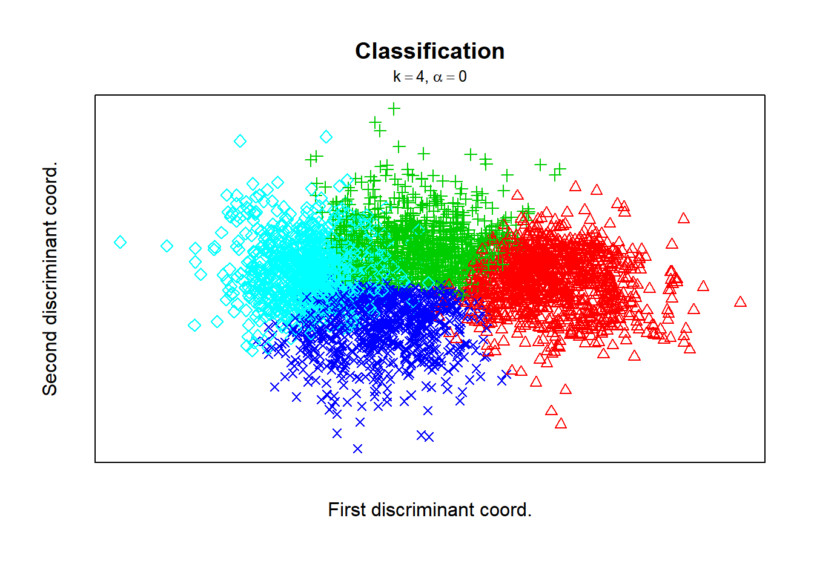

Parte 3
Robson Ribeiro de Souza
18/12/2019
ETAPA 3
Lendo o arquivo csv
library(readr)
BaseWine_Red_e_White <- read_delim("BaseWine_Red_e_White.csv",
";", escape_double = FALSE, col_types = cols(volatileacidity = col_double()),
locale = locale(decimal_mark = ","),
trim_ws = TRUE)
#View(BaseWine_Red_e_White)Deixar apenas variáveis ccom características físico-químicas
Excluindo as variáveis : id_vinho, quality e vinho
BaseVinhos <- BaseWine_Red_e_White[,c(2,3,4,5,6,7,8,9,10,11,12)]
#view(BaseVinhos)Gerando uma amostra aleatória
set.seed(10)
amostra_vinhos <- BaseVinhos[sample(1:nrow(BaseVinhos), 600),]
#View(amostra_vinhos)Verificando o novo formato das variáveis
str(amostra_vinhos)## Classes 'tbl_df', 'tbl' and 'data.frame': 600 obs. of 11 variables:
## $ fixedacidity : num 7.9 7.2 6.3 10.1 7.3 7.1 5.6 5.2 7.2 6.9 ...
## $ volatileacidity : num 0.28 0.23 0.18 0.37 0.19 0.72 0.32 0.34 0.19 0.48 ...
## $ citricacid : num 0.41 0.38 0.36 0.34 0.49 0 0.32 0.37 0.39 0.2 ...
## $ residualsugar : num 4.9 14.3 1.2 2.4 15.6 ...
## $ chlorides : num 0.058 0.058 0.034 0.085 0.058 0.123 0.043 0.031 0.036 0.082 ...
## $ freesulfurdioxide : num 31 55 26 5 50 6 32 42 32 9 ...
## $ totalsulfurdioxide: num 153 194 111 17 134 14 105 133 85 23 ...
## $ density : num 0.997 0.998 0.991 0.997 1 ...
## $ pH : num 3.27 3.09 3.16 3.17 3.42 3.45 3.24 3.25 3.16 3.39 ...
## $ sulphates : num 0.51 0.44 0.51 0.65 0.36 0.58 0.47 0.41 0.5 0.43 ...
## $ alcohol : num 9.7 9 11 10.6 9.1 9.8 11.2 12.5 10.5 9.05 ...Estatísticas descritivas da nova base
summary(amostra_vinhos)## fixedacidity volatileacidity citricacid residualsugar
## Min. : 3.900 Min. :0.1100 Min. :0.0000 Min. : 0.600
## 1st Qu.: 6.400 1st Qu.:0.2300 1st Qu.:0.2500 1st Qu.: 1.800
## Median : 7.000 Median :0.2900 Median :0.3100 Median : 2.950
## Mean : 7.178 Mean :0.3351 Mean :0.3254 Mean : 5.355
## 3rd Qu.: 7.600 3rd Qu.:0.4000 3rd Qu.:0.4000 3rd Qu.: 7.725
## Max. :15.500 Max. :0.9650 Max. :1.0000 Max. :31.600
## chlorides freesulfurdioxide totalsulfurdioxide density
## Min. :0.01600 Min. : 1.00 Min. : 6.00 Min. :0.9874
## 1st Qu.:0.03800 1st Qu.: 17.00 1st Qu.: 81.75 1st Qu.:0.9923
## Median :0.04700 Median : 28.00 Median :118.00 Median :0.9945
## Mean :0.05769 Mean : 30.62 Mean :115.66 Mean :0.9946
## 3rd Qu.:0.06200 3rd Qu.: 42.00 3rd Qu.:155.25 3rd Qu.:0.9967
## Max. :0.61000 Max. :289.00 Max. :440.00 Max. :1.0103
## pH sulphates alcohol
## Min. :2.740 Min. :0.270 Min. : 8.60
## 1st Qu.:3.110 1st Qu.:0.430 1st Qu.: 9.50
## Median :3.200 Median :0.500 Median :10.40
## Mean :3.217 Mean :0.537 Mean :10.59
## 3rd Qu.:3.320 3rd Qu.:0.620 3rd Qu.:11.40
## Max. :3.810 Max. :2.000 Max. :14.00attach(amostra_vinhos)Comando para gerar em 3 linhas e 4 colunas os histogramas
par (mfrow=c(3,4))
hist(fixedacidity)
hist(volatileacidity)
hist(citricacid)
hist(residualsugar)
hist(chlorides)
hist(freesulfurdioxide)
hist(totalsulfurdioxide)
hist(density)
hist(pH)
hist(sulphates)
hist(alcohol)
par (mfrow=c(1,1))
Boxplot da Amostra - Geral
boxplot(amostra_vinhos)
Boxplot da Amostra por variável
attach(amostra_vinhos)## The following objects are masked from amostra_vinhos (pos = 3):
##
## alcohol, chlorides, citricacid, density, fixedacidity,
## freesulfurdioxide, pH, residualsugar, sulphates,
## totalsulfurdioxide, volatileaciditypar (mfrow=c(1,1))
boxplot(fixedacidity)
boxplot(volatileacidity)
boxplot(citricacid)
boxplot(residualsugar)
boxplot(chlorides)
boxplot(freesulfurdioxide)
boxplot(totalsulfurdioxide)
boxplot(density)
boxplot(pH)
boxplot(sulphates)
boxplot(alcohol)
par (mfrow=c(1,1))Padronizando
cluster_vinhos <- scale(amostra_vinhos)
summary(cluster_vinhos)## fixedacidity volatileacidity citricacid residualsugar
## Min. :-2.5626 Min. :-1.4569 Min. :-2.1834 Min. :-1.0100
## 1st Qu.:-0.6082 1st Qu.:-0.6803 1st Qu.:-0.5058 1st Qu.:-0.7551
## Median :-0.1392 Median :-0.2920 Median :-0.1032 Median :-0.5109
## Mean : 0.0000 Mean : 0.0000 Mean : 0.0000 Mean : 0.0000
## 3rd Qu.: 0.3299 3rd Qu.: 0.4198 3rd Qu.: 0.5007 3rd Qu.: 0.5033
## Max. : 6.5057 Max. : 4.0762 Max. : 4.5268 Max. : 5.5741
## chlorides freesulfurdioxide totalsulfurdioxide density
## Min. :-0.93189 Min. :-1.4995 Min. :-1.94202 Min. :-2.41503
## 1st Qu.:-0.44007 1st Qu.:-0.6894 1st Qu.:-0.60055 1st Qu.:-0.76996
## Median :-0.23887 Median :-0.1326 Median : 0.04141 Median :-0.01004
## Mean : 0.00000 Mean : 0.0000 Mean : 0.00000 Mean : 0.00000
## 3rd Qu.: 0.09646 3rd Qu.: 0.5762 3rd Qu.: 0.70108 3rd Qu.: 0.73549
## Max. :12.34733 Max. :13.0809 Max. : 5.74378 Max. : 5.32968
## pH sulphates alcohol
## Min. :-2.8857 Min. :-1.6616 Min. :-1.6399
## 1st Qu.:-0.6460 1st Qu.:-0.6657 1st Qu.:-0.8973
## Median :-0.1012 Median :-0.2300 Median :-0.1547
## Mean : 0.0000 Mean : 0.0000 Mean : 0.0000
## 3rd Qu.: 0.6252 3rd Qu.: 0.5169 3rd Qu.: 0.6704
## Max. : 3.5913 Max. : 9.1065 Max. : 2.8158Método hierarquico
hier_cluster <- hclust(dist(cluster_vinhos),method='ward.D2')
plot(hier_cluster, ylab='distancia', cex=0.1)
groups <- cutree(hier_cluster, k=5) # cut tree into 5 clusters
# draw dendogram with red borders around the 5 clusters
rect.hclust(hier_cluster, k=5, border="red")
groups <- cutree(hier_cluster, k=6) # cut tree into 5 clusters
# draw dendogram with red borders around the 5 clusters
rect.hclust(hier_cluster, k=6, border="blue") 
Determine number of clusters
wss <- (nrow(cluster_vinhos)-1)*sum(apply(cluster_vinhos ,2,var))
for (i in 2:15) wss[i] <- sum(kmeans(cluster_vinhos ,iter.max=100,
centers=i)$withinss)
plot(1:15, wss, type="b", xlab="Numero de Clusters",
ylab="Within groups sum of squares") Forma gráfica
library(tclust)
cluster1 <- tkmeans(cluster_vinhos, k = 4, alpha = 0.00)
plot(cluster1)
Gerando a quantidade de cluster com Kmeans
set.seed(2019)
output_cluster <- kmeans(cluster_vinhos,5)
segmento <- output_cluster$cluster
table(segmento)## segmento
## 1 2 3 4 5
## 133 77 71 168 151Quais características de cada cluster
centros <- output_cluster$centers
centros## fixedacidity volatileacidity citricacid residualsugar chlorides
## 1 -0.1091745 -0.4467523 0.339747345 1.4491672 -0.1148212
## 2 -0.1239224 1.8019407 -1.382514343 -0.5894972 0.4349919
## 3 1.8064123 0.5392347 0.799340343 -0.5596454 1.1119120
## 4 -0.3327272 -0.4497629 -0.004968721 -0.3091786 -0.1333458
## 5 -0.3198336 -0.2785224 0.035422440 -0.3686829 -0.4951445
## freesulfurdioxide totalsulfurdioxide density pH sulphates
## 1 0.89634000 0.99251511 0.9726685 -0.47257468 -0.36523740
## 2 -0.73810184 -1.16764681 0.3750265 1.00961442 0.35040758
## 3 -0.75861356 -1.22991252 0.8928993 -0.06879207 1.32520933
## 4 -0.03266009 0.33909365 -0.2492838 0.20111081 -0.01028491
## 5 -0.02007233 -0.07774602 -1.1904512 -0.29000171 -0.46865435
## alcohol
## 1 -0.9159104
## 2 -0.1187895
## 3 0.1590916
## 4 -0.3200398
## 5 1.1485699# quantas rodadas até chegar nos clusters
Qte_iter <- output_cluster$iter
Qte_iter## [1] 4Mostrando Resultados
aggregate(amostra_vinhos,by=list(segmento),FUN=mean)## Group.1 fixedacidity volatileacidity citricacid residualsugar chlorides
## 1 1 7.038346 0.2660902 0.3760150 12.178571 0.05254887
## 2 2 7.019481 0.6135714 0.1193506 2.579870 0.07714286
## 3 3 9.488732 0.4184507 0.4445070 2.720423 0.10742254
## 4 4 6.752381 0.2656250 0.3246429 3.899702 0.05172024
## 5 5 6.768874 0.2920861 0.3306623 3.619536 0.03553642
## freesulfurdioxide totalsulfurdioxide density pH sulphates alcohol
## 1 48.32331 171.70677 0.9974282 3.138647 0.4782707 9.477444
## 2 16.03896 49.72727 0.9956626 3.383506 0.5932468 10.443506
## 3 15.63380 46.21127 0.9971925 3.205352 0.7498592 10.780282
## 4 29.97321 134.80952 0.9938182 3.249940 0.5352976 10.199603
## 5 30.22185 111.27152 0.9910377 3.168808 0.4616556 11.979470Mostrando Resultados em gráficos
library(cluster)
clusplot(cluster_vinhos, output_cluster$cluster, color=TRUE, shade=TRUE,
labels=2, lines=0 , cex=0.75)Junta os arquivos em colunas
matriz <- cbind(amostra_vinhos,cluster_vinhos,segmento)
#View(matriz)Componentes Principais.
acpcor <- prcomp(cluster_vinhos, scale = TRUE)
summary(acpcor)## Importance of components:
## PC1 PC2 PC3 PC4 PC5 PC6 PC7
## Standard deviation 1.7157 1.5741 1.2382 1.03770 0.8630 0.80036 0.7468
## Proportion of Variance 0.2676 0.2253 0.1394 0.09789 0.0677 0.05823 0.0507
## Cumulative Proportion 0.2676 0.4929 0.6322 0.73014 0.7978 0.85608 0.9068
## PC8 PC9 PC10 PC11
## Standard deviation 0.68765 0.56655 0.44878 0.17358
## Proportion of Variance 0.04299 0.02918 0.01831 0.00274
## Cumulative Proportion 0.94977 0.97895 0.99726 1.00000plot(1:ncol(cluster_vinhos), acpcor$sdev^2, type = "b", xlab = "Componente",
ylab = "Variância", pch = 20, cex.axis = 0.8, cex.lab = 0.8)
sum(acpcor$sdev^2)## [1] 11acpcor$rotation[, 1:7]## PC1 PC2 PC3 PC4 PC5
## fixedacidity -0.20164973 0.38858843 -0.32939168 -0.300707598 0.09072176
## volatileacidity -0.38344674 0.09610343 0.31754638 -0.086341625 -0.45796964
## citricacid 0.15548143 0.25286366 -0.56370548 0.178653105 0.28529659
## residualsugar 0.37053309 0.25134649 0.21985410 -0.272509190 0.17514470
## chlorides -0.22536902 0.37502020 -0.03358035 0.431486347 -0.36561968
## freesulfurdioxide 0.42665876 0.01824237 0.06477640 0.402170666 -0.18130054
## totalsulfurdioxide 0.50701262 0.01844721 0.07150118 0.243407589 -0.14762091
## density 0.02390505 0.54944462 0.30678072 -0.172814635 0.25789524
## pH -0.19933066 -0.19580879 0.46192293 0.308551073 0.59691196
## sulphates -0.29822168 0.25142733 -0.05908000 0.513514611 0.21767031
## alcohol -0.17806097 -0.40974220 -0.32117290 -0.002643661 0.10691020
## PC6 PC7
## fixedacidity -0.25166475 0.53702922
## volatileacidity -0.38603876 0.03018223
## citricacid 0.07911905 -0.09721891
## residualsugar -0.33463329 -0.56679260
## chlorides 0.19475067 -0.30055944
## freesulfurdioxide -0.38617931 0.39468447
## totalsulfurdioxide -0.12301453 0.11220363
## density -0.08903507 0.06284699
## pH 0.02108722 0.18913715
## sulphates -0.26611440 -0.15089349
## alcohol -0.62290932 -0.24246724biplot(acpcor, xlab = "CP1", ylab = "CP2",cex.lab = 1.0, cex.axis = 1.0)
acpcor <- prcomp(cluster_vinhos, scale = TRUE, retx = TRUE)
escore1 <- acpcor$x[, 1]
hist(escore1)